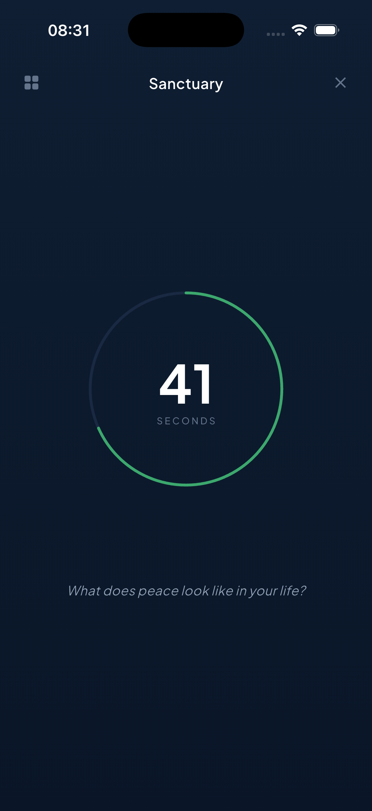
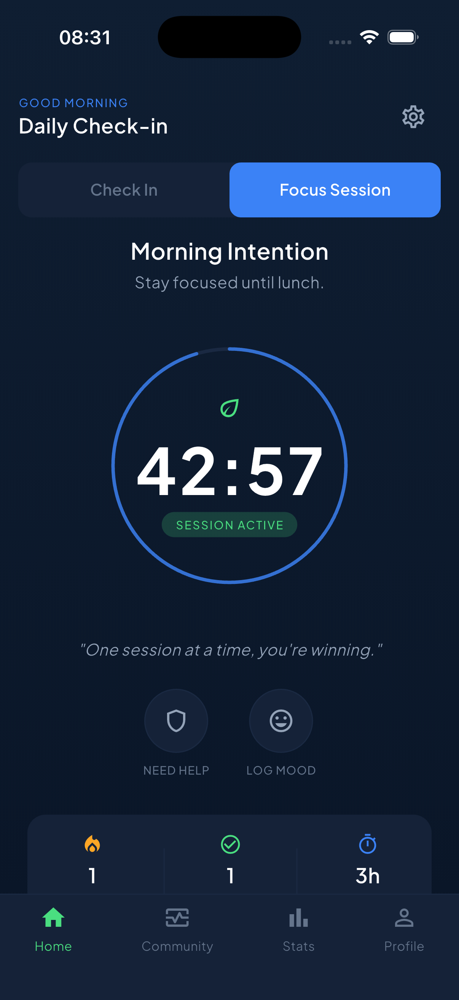
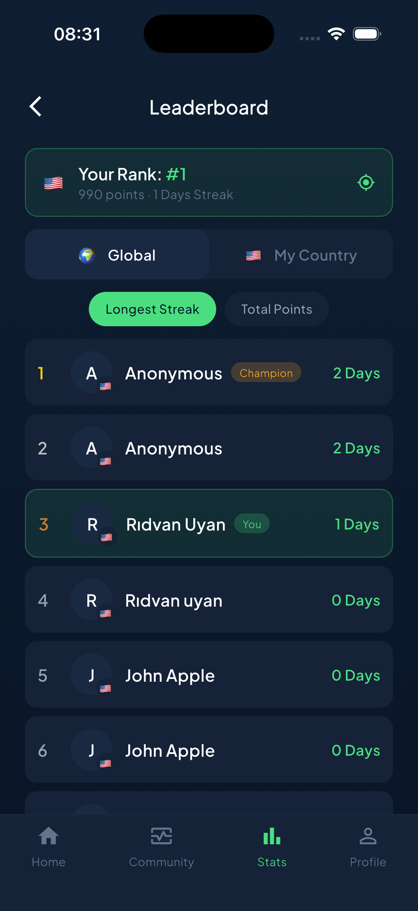
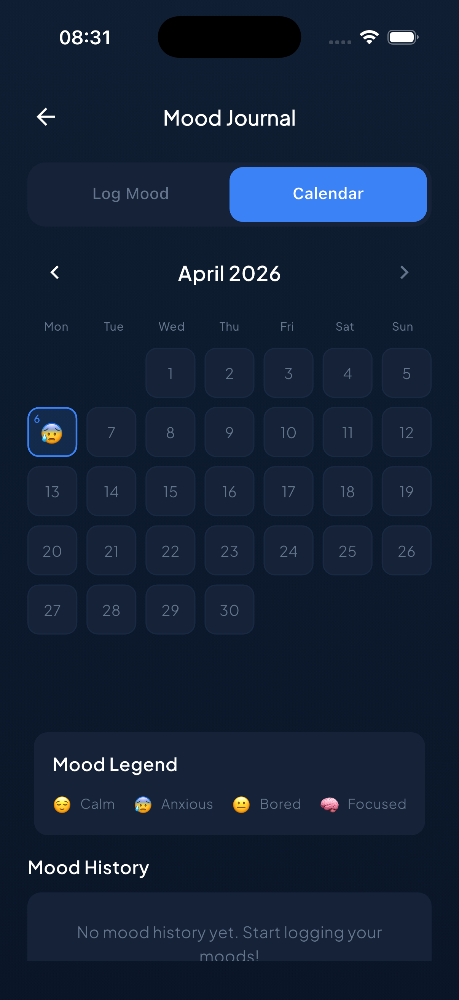
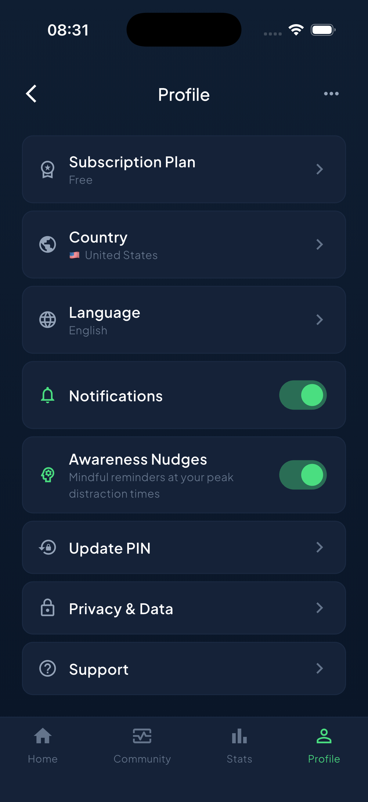

Unscrol helps you break doom-scrolling with awareness nudges, a daily Sanctuary for stillness, focus sessions and a community of focused minds.
You scroll without remembering why you opened the app.
You end the day tired but can't point to anything you did.
Focus feels shorter. Boredom feels unbearable.
You scroll in bed, then can't sleep, then scroll some more.
Unscrol rebuilds the muscle between urge and action — gently, every day.
No shaming, no blocking apps. Just small, mindful rituals that compound.
Morning, afternoon, evening — a 10-second check-in that tracks how you showed up, not just your screen minutes.
A daily reflection prompt — "What does peace look like in your life?" — followed by a stillness timer. No feed. No buttons. Just you.
25/45/60-minute focus sessions with an intention. When an urge appears, Unscrol meets it with a breath — not a block screen.
A private space the feed can't reach. A prompt to reflect, a quiet timer, and room to actually feel what you feel.
Mindful reminders appear at your peak distraction times — not the app's. Gentle, never naggy.
25, 45 or 60 minutes of intention-led deep work. Log your mood. Ask for help when the urge hits.
Morning, afternoon, evening. +30 points per slot. Build a streak you're proud of — one slot at a time.
"You are in the Top 50% of focused minds today." See how many humans are in the sanctuary right now.
Global and country rankings by longest streak or total points. Compete on attention, not engagement.
Tag days as Calm, Anxious, Bored or Focused. Watch patterns surface. Your phone isn't the only variable.
English, Español, Português, Deutsch, Türkçe, Italiano, 日本語, 한국어, 中文, हिन्दी, العربية.
PIN-based sign-in, no password, no tracking ads. Your data is yours.
Designed to keep you motivated, never overwhelmed.





"The Sanctuary is the first app screen that's ever told me to stop using the app. It works."
"Screen time dropped 70% in three weeks. The streak + mood combo is the unlock."
"Awareness Nudges caught me at 11pm in bed. I actually put the phone down. Rare."
"Focus sessions with an intention changed how I study. I'm not blocking Instagram — I'm choosing."
No. Unscrol is about awareness, not restriction. We rebuild the pause between urge and action — blocks teach avoidance, awareness teaches choice.
Yes. Unscrol uses PIN-based sign-in, no passwords, no ad trackers. Your check-ins, moods and reflections are yours.
The core experience is free. Premium unlocks extended focus history, advanced streak rewards and priority support. A launch discount is active for a limited time.
Unscrol is iOS-first at launch. Android is on the roadmap — join the waitlist via the blog for updates.
The Sanctuary is one screen, one prompt, one timer. No libraries, no voices, no shopping. It's the opposite of a feed — and that's the point.
Eleven: English, Español, Português, Deutsch, Türkçe, Italiano, Japanese, Korean, Chinese, Hindi and Arabic.
Download Unscrol today. Your next quiet moment is one tap away.
Free to start · iOS 16+ · 11 languages